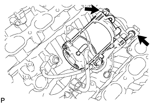
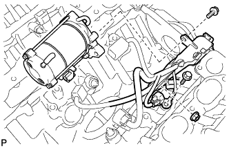

STARTER (for 2.0 kW Type) > REMOVAL |
| 1. DISCONNECT CABLE FROM NEGATIVE BATTERY TERMINAL |
| 2. REMOVE INTAKE MANIFOLD |
Remove the intake manifold (Click here).
| 3. REMOVE WATER BY-PASS PIPE SUB-ASSEMBLY |
 |
Disconnect the connector.
Disconnect the wire harness clamp from the water by-pass pipe.
Disconnect the 2 vacuum switching valve hoses from the water by-pass pipe clamp.
Remove the bolt.
Pull out the water by-pass pipe.
Remove the O-ring from the water by-pass pipe.
| 4. REMOVE NO. 2 AIR INJECTION SYSTEM HOSE (w/ Secondary Air Injection System) |
 |
Remove the No. 2 air injection system hose from the rear water by-pass joint and air switching valve.
| 5. DISCONNECT NO. 1 WATER BY-PASS PIPE (w/o Air Cooled Transmission Oil Cooler) |
 |
Remove the 2 bolts and disconnect the water by-pass pipe from the cylinder head cover RH.
| 6. REMOVE AIR TUBE SUB-ASSEMBLY RH (w/ Secondary Air Injection System) |
 |
Remove the 2 bolts, 2 nuts and air tube sub-assembly.
Remove the 2 gaskets.
| 7. REMOVE NO. 3 AIR TUBE (w/ Secondary Air Injection System) |
 |
Remove the 2 bolts, 2 nuts and No. 3 air tube.
Remove the 2 gaskets.
| 8. REMOVE NO. 2 AIR SWITCHING VALVE ASSEMBLY (w/ Secondary Air Injection System) |
 |
Remove the vacuum switching valve hose from the No. 2 air switching valve.
Remove the 2 bolts, gasket and No. 2 air switching valve from the rear water by-pass joint.
| 9. REMOVE NO. 1 AIR SWITCHING VALVE ASSEMBLY (w/ Secondary Air Injection System) |
 |
Remove the vacuum switching valve hose from the No. 1 air switching valve.
Remove the 2 bolts, gasket and No. 1 air switching valve from the rear water by-pass joint.
| 10. REMOVE REAR WATER BY-PASS JOINT |
 |
Remove the 4 nuts, water by-pass joint and 2 gaskets.
| 11. REMOVE STARTER ASSEMBLY |
 |
Remove the 2 bolts holding the starter to the cylinder block.
Disconnect the starter from the cylinder block.
 |
Remove the bolt and disconnect the engine wire protector from the starter.
Remove the bolt and disconnect the ground wire.
Disconnect the starter connector.
Remove the nut and disconnect the starter wire.
Remove the starter.